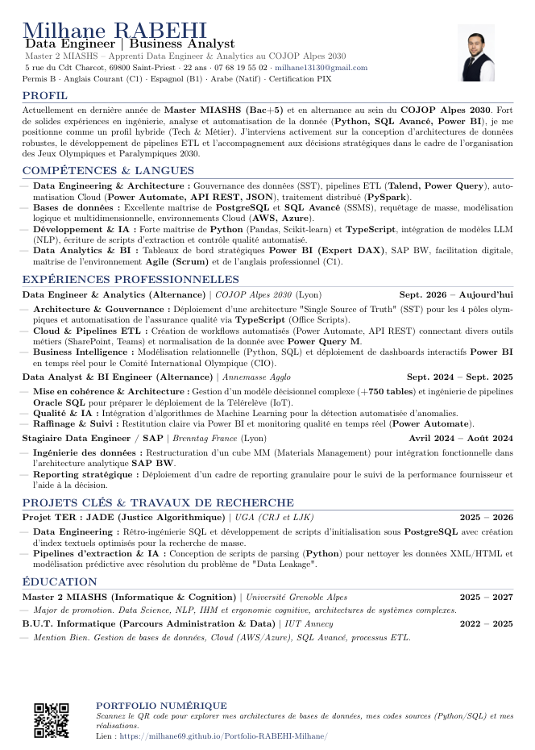

Étudiant en Master MIASHS – parcours Informatique & Cognition (UGA), passionné par le développement web, l’intelligence artificielle, les bases de données et la cybersécurité.
Voir mes projetsJe m’appelle Milhane Rabehi. Après un B.U.T. Informatique (USMB – IUT d’Annecy, parcours Analyse et Gestion des Données), je poursuis désormais un Master MIASHS – Informatique & Cognition à l’Université Grenoble Alpes. Je m’oriente vers la data (modélisation, qualité et exploitation), avec une appétence pour le code (scripts Python) et l’analyse statistique.
Je suis certifié PIX et titulaire d’un Bac STI2D (spécialité Systèmes d’Information et Numérique). En dehors des études : musculation, jeux vidéo, boxe Muay Thai et sports automobiles. Côté langues : anglais (B2), espagnol (notions), arabe dialectal et quelques mots en japonais.
Sélectionne une compétence pour en savoir plus.
Création d'un jeu vidéo de type escape game en utilisant MonoGame. Le jeu inclut des énigmes et questions interactives développées en HTML, CSS et JavaScript.
Ce projet avait pour objectif :
Développement d'une IA pour le jeu vidéo (Minimax, Alpha-Beta, réseaux de neurones) avec analyse des performances et optimisation.
Ce projet impliquait :
VM Debian avec environnement C# configuré et outillage front (CSS/JS).
Les étapes du projet comprenaient :
Conception PostgreSQL, requêtes de validation et tests de stabilité.
Objectifs :
Questionnaire utilisateurs → persona → maquette (Figma) sur une activité à Annecy.
Le projet consistait à :
Étude de l’entreprise Capgemini (SWOT) et présentation.
Contenus :
Application connectée à PhpPgAdmin, tests d’UX et validation.
Le projet impliquait :
Graphes + Excel/VBA pour l’aide à la décision, simulation et optimisation.
Objectifs :
Déploiement d’un site WordPress sur Raspberry Pi avec base MariaDB.
Objectifs :
Modélisation, création de jeux de données, analyses statistiques et visualisations (Power BI).
Livrables :
Séminaire d’entreprise en anglais (cohésion, communication, présentations).
Objectifs :
Site Laravel avec sécurité, tests de charge, chatbot, MCD et dashboards Power BI.
Optimisation PostgreSQL, vente simulée pour analyses Power BI, workflows Knime, IA pour Nutri-Score, détection d’erreurs de saisie.
OLTP/OLAP, NLP basique des critiques, visualisations et soutenance.
Remodélisation complète d'un cube MM (module achat) sur SAP pour optimiser le reporting des données d'achat. (BRENNTAG FRANCE)
Développement d'un système de gestion des commandes (PHP/MySQL). (EASYDIS FRANCE)
Création d’un système de reporting avec Power BI basé sur des données existantes, destiné au service en lien avec les habitants. (ANNEMASSE AGGLO FRANCE)
Principales tâches réalisées :
Portfolio interactif en HTML5, CSS3, et JavaScript (projets, compétences, mini-jeux).
Le portfolio inclut :
Site dédié au clan : stats Power BI, classement, gestion des membres, page de contact et présentation personnelle.
Ce site propose :
Bot Discord (Python) : modération, rôles, notifications, intégrations API, et stats via Power BI.
Fonctionnalités principales :
Scripts d’automatisation (organisation de fichiers, web scraping, envoi d’e-mails, rappels, extraction Excel/CSV).
Exemples :
Générateur de maquettes, devis PDF (jsPDF), EmailJS, design responsive, déployé via Netlify.
Fonctionnalités :
Cliquez sur l'image pour afficher le CV en grand format.

Vous pouvez me contacter par email : milhane13130@gmail.com
Vous pouvez aussi me trouver sur LinkedIn :
RABEHI Milhane